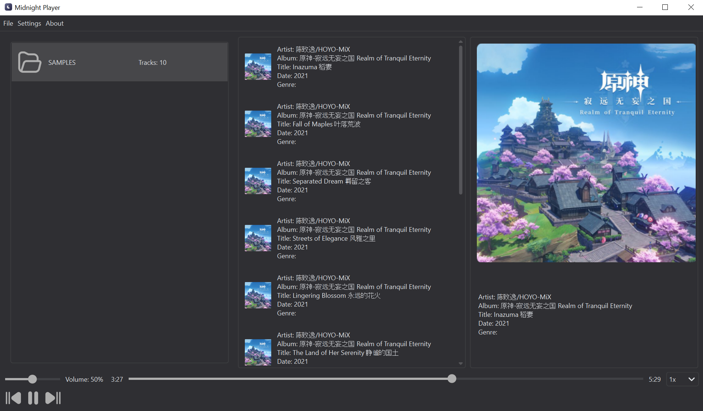
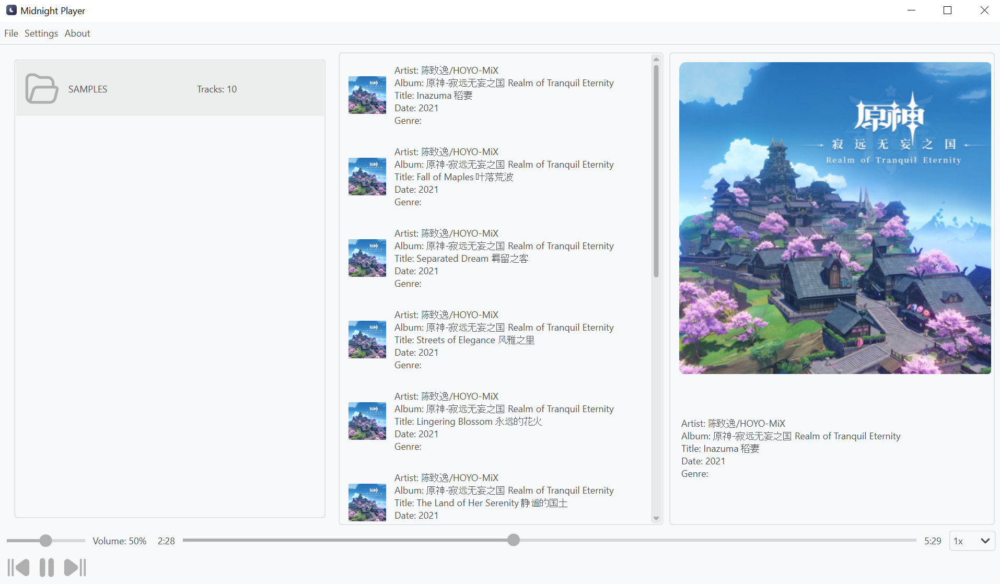

Features
- Audio Playback: Supports various audio formats including MP3, WAV, FLAC, OGG, M4A, AAC, and WMA.
- Playlist Management: Create and manage playlists with ease.
- Playback Speed Control: Adjust playback speed between 0.5x and 2x.
- Dark and Light Themes: Choose between dark and light themes for an optimal UI experience.
- Cross-Platform: Available for Windows, Ubuntu (DEB) Linux distributions.
Installation
Windows Installer (EXE)
- Download the installer from the Releases section.
- Run the installer and follow the on-screen instructions.
Ubuntu (DEB)
- Download the
.debpackage from the Releases section. - Install it using the following commands:
sudo dpkg -i midnight-player_1.0-1_amd64.deb sudo apt-get install -f
From Source
- Ensure you have Python 3.7+ and pip installed.
- Clone the repository:
git clone https://github.com/Niamorro/Midnight-Player cd Midnight-Player - Install the required packages:
pip install -r requirements.txt
- Run the application:
python main.py
Usage
- Launch the application.
- Use the
Filemenu to open audio files or folders. - Create and manage playlists via the
Add PlaylistandRemove Playlistoptions. - Control playback speed using the dropdown menu.
- Adjust the volume and navigate through tracks using the sliders.
Screenshots

Dark Theme

Light Theme